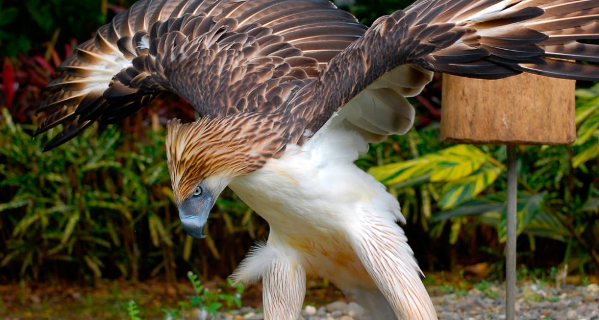
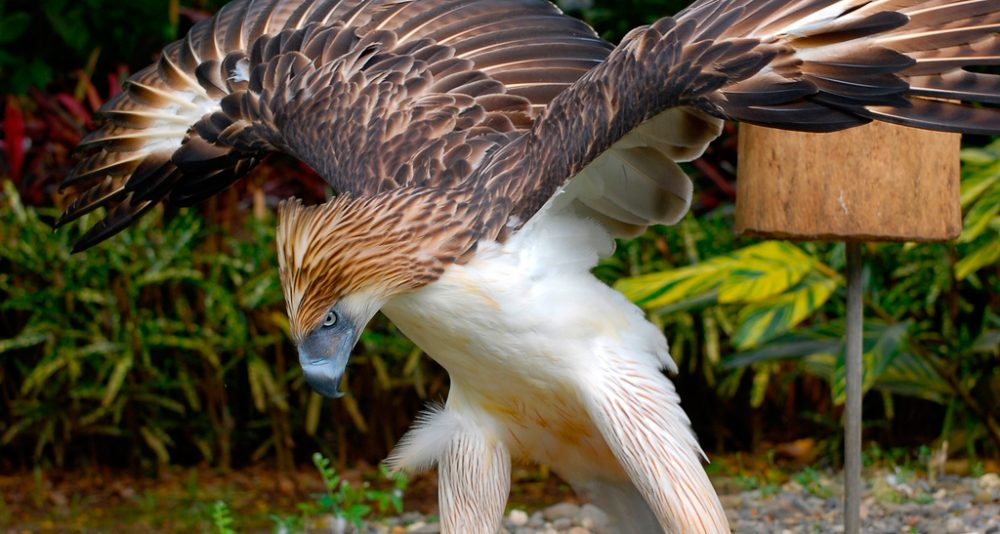
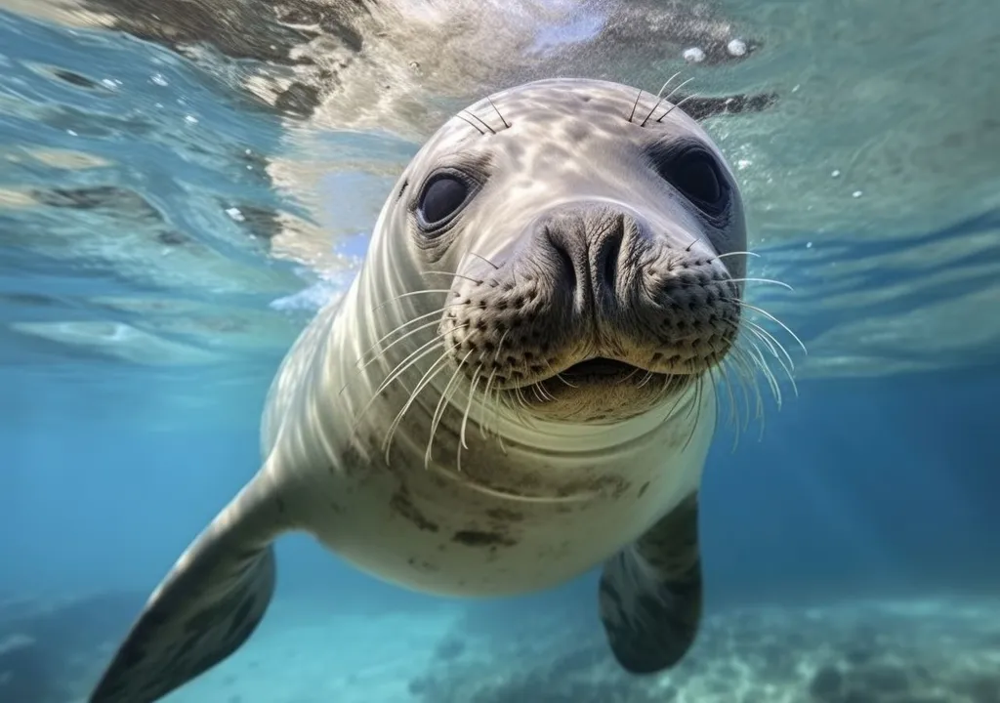
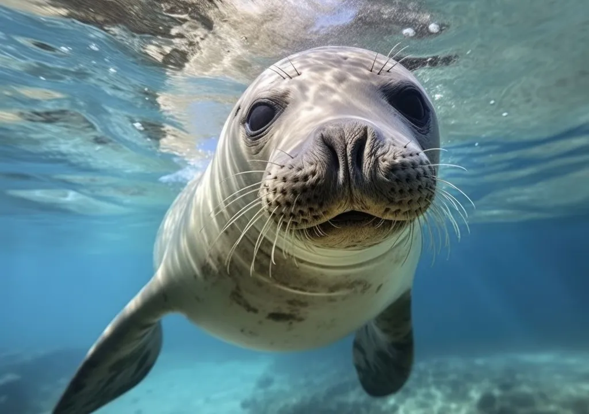
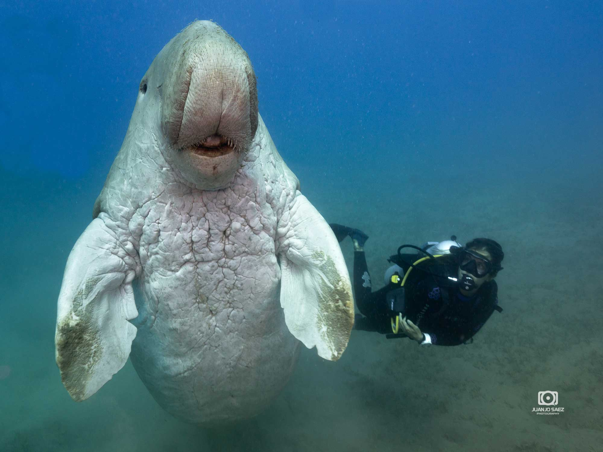
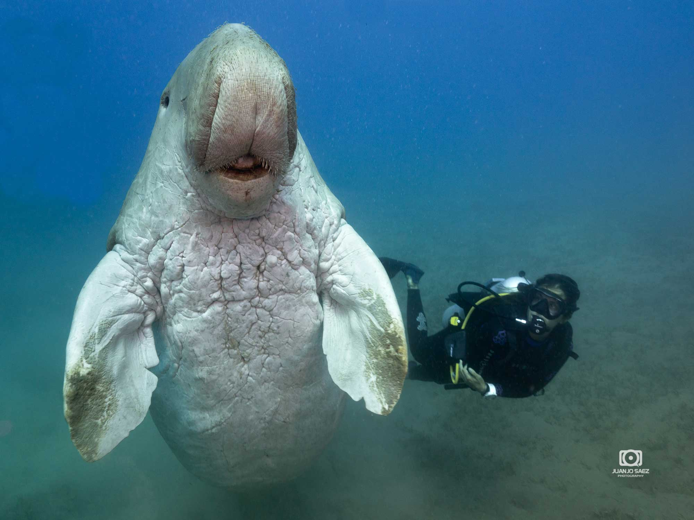

Animales en peligro de extinción en España
En este apartado podréis aprender sobre los tipos de animales en peligro que existen en el mundo. Para ello hemos elaborado una lista con las especies con las especies más emblemáticas con las que trabaja nuestra asociación.
A continuación tenéis una lista con los tipos de animales en pleigro que hay:
- Aves en peligro de extinción:
- Cigüena negra
-
Cóndor californiano
-
Kakapo
-
Colibrí de Arica
-
Águila monera
- Animales mamíferos en peligro de extinción:
-
Lince Ibérico
-
Oso pardo
-
Lobo ibérico
-
Rinoceronte negro
-
Gorila de montaña
- Especies marinas en peligro de extinción:
-
Foca monje
-
Caballito de mar
-
Ballena azul
-
Tiburón ballena
-
Dugongo: sirena del Pacífico
La cigüeña negra es un ave mítica.Es una criatura tímida , su hábitat está en los bosques y montañas.
La mayoría de cigüeñas negras pasan el invierno en África, pero algunas permanecen en la península Ibérica, donde disfrutan de los suaves inviernos de clima mediterráneo.


Es un ave rapaz diurna en peligro crítico de extinción que habita en los estados de Arizona, Utah, California y Baja California de Estados Unidos.
Es un ave monógama y carroñera, que puede vivir hasta 60 años en libertad, ostenta el título de ave voladora más grande de Norteamérica.
Es un ave endémica de Nueva Zelanda en peligro crítico de extinción. Es un loro nocturno, herbívoro y no volador.
Una curiosidad sobre esta ave es que se trata del único loro del mundo que no vuela, además de ser reconocido como el loro más gordo a nivel mundial también.

es el ave más pequeña de todo Chile. Esta ave está en peligro crítico de extinción y se estima que en la actualidad quedan menos de 250 ejemplares en los matorrales, bosques y jardines chilenos.
Es la ave nacional de Filipinas, actualmente su población no sobrepasa los 500 ejemplares, se creía que solo se alimentaban de monos, de ahú su nombre, pero con el tiempo se descubrió que también se alimenta de otras especies como serpientes o varanos.
 

Es un felino muy ágil, sus orejas terminan en un pincel de pelos negros, lo que les da su aspecto característico. Es un felino de pequeño tamaño, el macho adulto puede llegar a pesar unos 12kg. En la actualidad se estima que su número es menor de 300 ejemplares en libertad a pesar de la protección y los planes de conservación.

Está presente en los Pirineos y en la cordillera Cantábrica.Es el animal más grande de toda la península y aun así son pequeños en comparación con otros osos. Se encuentra en estado de preocupación menor ya que está presente en otras regiones de Europa, sin embargo su número en España es tan bajo, que se debe trabajar en su conservación para evitar que desaparezca de la península.


El lobo ibérico está catalogado como especie vulnerable en el libro rojo, sin embargo su caza está permitida en el norte de España.
Los principales problemas a los que se enfrenta el lobo ibérico son la caza, la fragmentación de su hábitat y la presión humana tanto al lobo como a las especies de las que se alimenta.
Se alimenta de arbustos y arboles de pequeño tamaño,han sufrido desde hace décadas el acoso y presión de los cazadores por sus cuernos. En la actualidad aunque es una especie protegida y su caza esta prohibida, su número es muy bajo.
El gorila de montaña cuenta tan solo con unos 700 ejemplares distribuidos principalmente en parques nacionales de África central.Son victimas de la caza furtiva y se ven afectados por enfermedades humanas.
La foca monje es un fócido de tamaño mediano, en el pasado se encontraban en el mar mediterráneo.Debido a las amenazas que ha sufrido, ahora su localización se ha fragmentado en tres zonas: mediterráneo oriental, mediterráneo occidental y en el Atlántico Norte.
 

Es uno de los animales más raros debido a su anatomía que le permite camuflarse como un camaleón y a que nada de forma vertical.
se capturan más de 20 millones de caballitos de mar al año; esto a pesar de que su pesca es totalmente ilegal.

La ballena azul llega a pesar 170 toneladas y mide hasta 30 metros de largo, es la más colosal de todas las ballenas y uno de los animales más grandes del planeta.
Su principal enemigo ha sido el hombre, quien, a través de la caza y pesca intensiva de este animal, lo ha empujado al borde de la extinción.
Está considerado un animal marino migratorio bastante solitario.Lo verás muy cerca de la superficie durante la mayor parte del día, para después sumergirse en lo más profundo del medio marino durante la noche. Esto hace que el tiburón ballena sea muy fácilmente detectado por los cazadores furtivos.
Es una especie cuyos graciosos movimientos despiertan la curiosidad de cuantos los observan.Se alimentan de fanerógamas marinas, se encuentran en Australia, pueden llegar a comer 40 kilos de comida al día, esto lo hace vulnerables a las actividades humanas como la contaminación y la caza furtiva.
 
